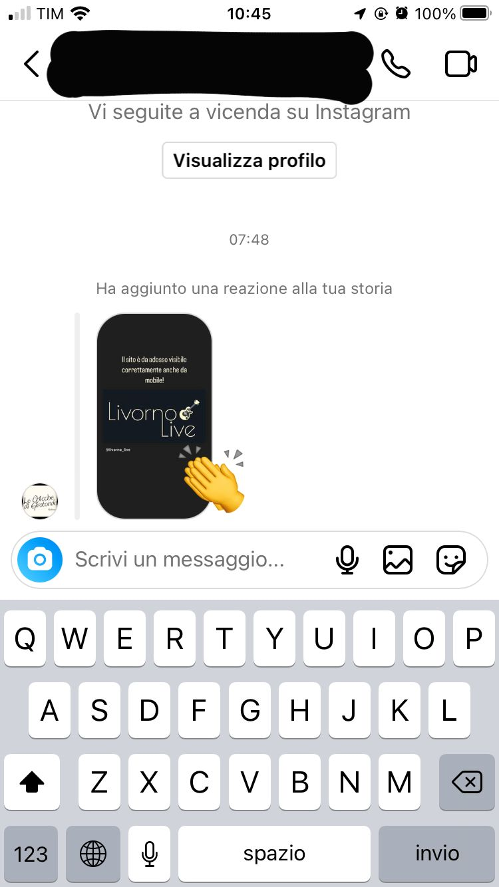
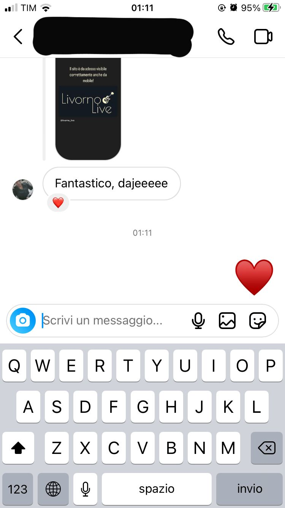
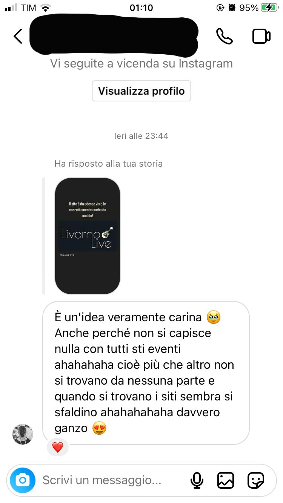

Abstract
Ho creato questo sito con l’intento di rispondere all’esigenza di avere sempre a portata di mano una panoramica di tutti gli eventi musicali che la mia città, Livorno, ogni anno ospita tra le sue mura. Il mio obiettivo primario è quello di invogliare l’utente ad usare il sito per una ricerca semplificata degli eventi in programma, invece di costringerlo ad una ricerca confusionaria e dispersiva che porta via generalmente molto tempo e che, soprattutto, spesso, finisce con lo scoraggiarlo facendogli abbandonare la pagina che sta visitando.
Project Management Plan
Benchmarking
Obiettivi
Livorno Live nasce per inglobare in una realtà unica tutto ciò che Livorno rappresenta a livello culturale. L’obiettivo che questo sito si prefigge è di facilitare la ricerca degli eventi che hanno luogo a Livorno a chiunque voglia passare una serata a suon di musica e arte, anche a chi si trova in questa città solo di passaggio.
Target utente
Il sito è rivolto principalmente ai giovani e ai giovani adulti (under 40); ma la musica non ha età e la passione che ne deriva può abbracciare tra le fasce di età più varie.
Competitors
Non esiste un vero e proprio competitor che si occupa nello specifico di questo argomento. I due siti che voglio prendere in considerazione sono: Livorno Today e Comune di Livorno. Questi due siti offrono in una loro sezione una panoramica di quelli che sono gli eventi che si svolgono e che si svolgeranno in città, senza fare una precisazione vera e propria di che eventi effettivamente si tratti. Il target di riferimento di entrambi i siti è molto più generico, in quanto, appunto, non si occupano solo e direttamente di eventi musicali dal vivo. Per quanto riguarda Livorno Today, troviamo una sezione più ampia che tratta gli eventi, rimanendo, però, sempre abbastanza generalista; mentre il sito del Comune di Livorno offre meno spazio all’argomento in questione.
Struttura e layout
Architettura del sito
Wireframe
HOME
EVENTI
ESPLORA
Look and feel
Il logo è stato realizzato con Figma, scegliendo come colore rgb(255, 250, 204) che è stato ripreso anche per tutti gli altri elementi cliccabili. Inoltre ho utilizzato Figma per disegnare il diagramma ad albero che mostra l’architettura del sito. Il colore principale è rgb(21, 26, 34), un colore scuro che, a mio avviso, rispecchia la natura di questo progetto e che va ad opporsi perfettamente al colore che ho scelto per il testo: rgb(222, 222, 222), un bianco meno luminoso adatto a diminuire lo sforzo visivo del lettore. I font utilizzati sono “Nunito” per tutto il testo e “Oswald” per i titoli. Le immagini sono state prese da Google Immagini.
Linguaggi e strumenti
Ho utilizzato linguaggi HTML e CSS. Inoltre, a supporto della mia progettazione web, ho utilizzato Figma per il logo e il diagramma ad albero, Balsamiq per il wireframe, Google Fonts per la scelta dei font, Fontawesome per l’icona di Instagram e Github per la pubblicazione online. Come editor ho utilizzato Visual Studio Code e, in particolare, mi sono state utili diverse sue estensioni, come il Live Server, Prettier e Auto Rename Tag che hanno velocizzato il lavoro. Mi sono servita, inoltre, di Google per risolvere i problemi che mano a mano si proponevano. Infine, ho utilizzato Google Analytics per misurare le statistiche tecniche del sito.
Communication strategy
Background
Attraverso una ricerca accurata di quelli che potevano essere i competitors del mio sito, è emerso che una vera e propria realtà parallela a quella che ho cercato di designare non esiste. Come già sottolineato precedentemente, i siti competitors che ho voluto inserire nella mia documentazione, si occupano prevalentemente di notizie generali che riguardano la città di Livorno e offrono solo in parte un resoconto degli eventi che vi si svolgono; e, inoltre, non c’è alcun tipo di differenziazione tra gli eventi che vengono mostrati, per esempio attraverso una divisione in sezioni per genere. Questo crea confusione e l’usabilità non risulta semplice e veloce, ma tediosa e dispersiva: è come cercare un ago in un pagliaio. Livorno Live cerca di focalizzarsi sulla semplicità e si promette di trattare solo di eventi musicali, senza generalizzare e tergiversare su altri tipi di eventi che potrebbero rendere difficile la ricerca agli utenti. D’altro canto, gli altri siti offrono una completezza ed elaborazione in più delle informazioni che, però, a mio avviso sono dovute alla generalità delle stesse informazioni trattate.
Obiettivi comunicativi
L’obiettivo principale di Livorno Live è quello di colmare una vera e propria mancanza sotto il profilo di una realtà che a Livorno è molto diffusa e richiesta; non esiste, infatti, ad oggi, un sito che tratti specificatamente di eventi musicali (a Livorno), i quali sono fonte di attrazione costante per i cittadini di questa città. Il mio obiettivo nasce, dunque, da una domanda che io stessa, vivendo a Livorno, mi sono posta, e che ho avuto l’occasione di condividere con la maggior parte delle persone con cui mi sono rapportata, ovvero: “Com’è possibile che nessuno abbia mai pensato a una cosa del genere, vista la quantità enorme di individui che la richiedono e che ci pensano?”. Il mio sito si impegna a dimostrare che la semplicità esercita un ruolo fondamentale nella riuscita di un qualcosa che sicuramente non è nuovo, ma che non è stato portato avanti nello specifico come ho cercato di fare io e ha avuto modo di essere gestito solamente in forma marginale insieme ad altri aspetti che vanno a complicare il processo di ricerca degli utenti.
Target audience e messaggio
Il sito si rivolge primariamente agli utenti under 40, i quali:
- hanno una dimestichezza maggiore con i social e il mondo digitale in generale e che, quindi, possono essere raggiunti più facilmente attraverso questo approccio;
- sono i più predisposti a partecipare a eventi di questo tipo, in quanto hanno una vita sociale e notturna più attive.
Come già sottolineato precedentemente, però, non mi appello a un target fisso di riferimento, perché tratto un argomento particolare che può riunire più fasce di età diverse tra loro, soprattutto conoscendo l’importanza che viene data a questo specifico stile di vita sempre in festa che caratterizza la mia città. Quindi fondamentalmente vorrei prendere in considerazione tutti. L’unico problema è che vi è un digital divide generazionale che potrebbe impedire a coloro che voglio cercare di raggiungere di interagire con la mia proposta e con i vari mezzi di comunicazione di cui ho tenuto conto. Vorrei che il target a cui mi rivolgo possa riscoprire la semplicità di effettuare una ricerca senza trovare complicazioni che possano mettere in confusione e far abbandonare la pagina web prima del tempo, incoraggiando anche l’utente a poter effettivamente partecipare in prima persona agli eventi che sta cercando.
Promozione
La promozione è avvenuta tramite Instagram, ovvero attraverso post e storie con i quali gli utenti hanno potuto interagire, mettendo like o rispondendo in prima persona. Inoltre è stato valutato l’engagement degli utenti attraverso Google Analytics, il quale ha permesso di monitorare l’andamento generale del sito, considerando il numero di visite effettuate e i singoli comportamenti messi in atto.
Valutazione dei risultati
Mi ero prefissata di raggiungere almeno due dei cinque obiettivi proposti, ovvero: almeno 50 visualizzazioni al mio sito e almeno 20 likes al post della pagina instagram che ho creato appositamente. Tramite Google Analytics e la risposta degli utenti che ho ricevuto su instagram ho valutato di aver raggiunto con successo i miei obiettivi.
  